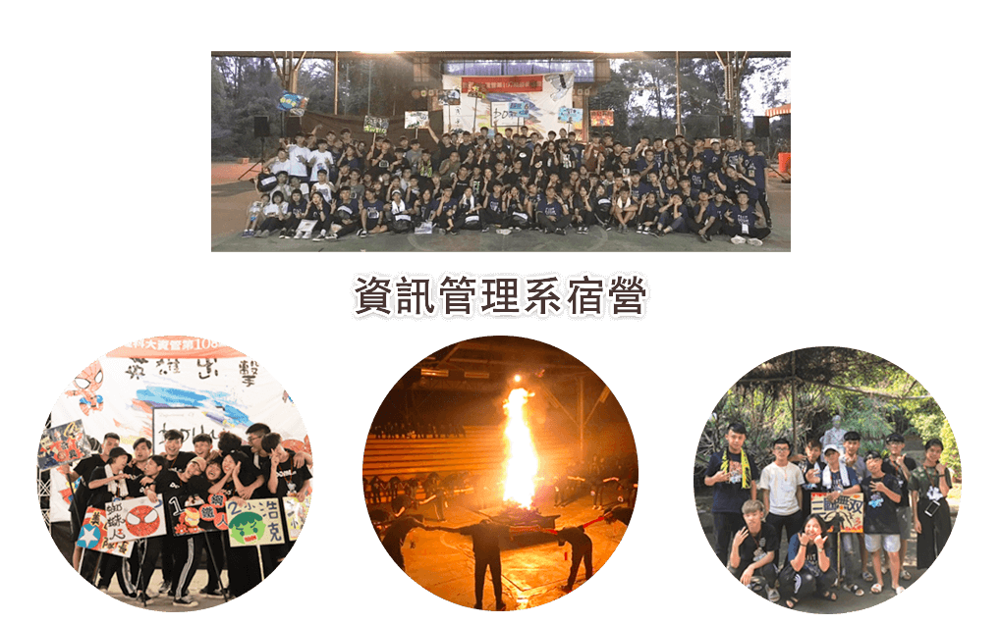
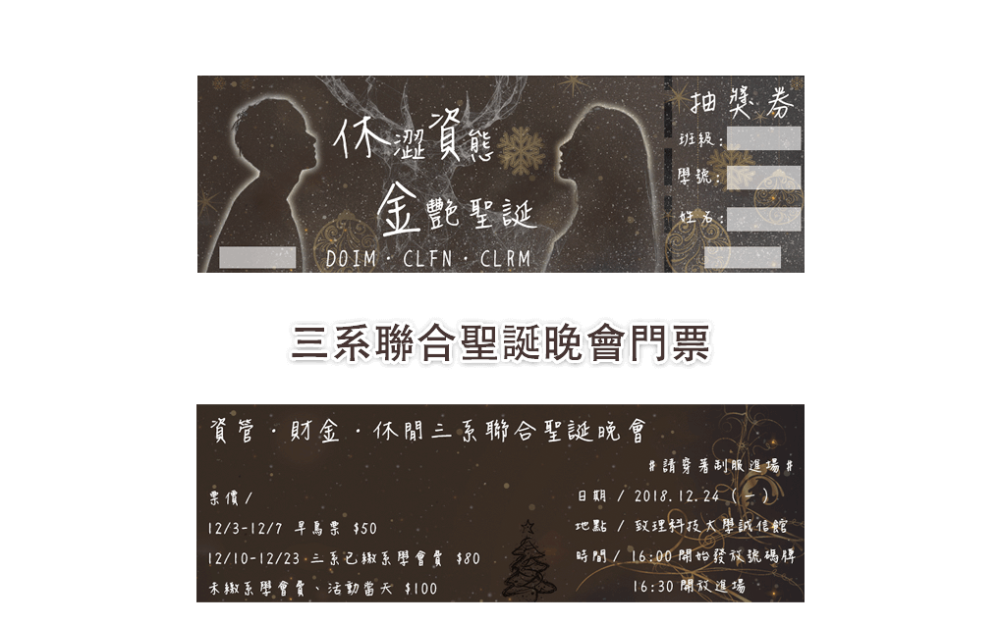
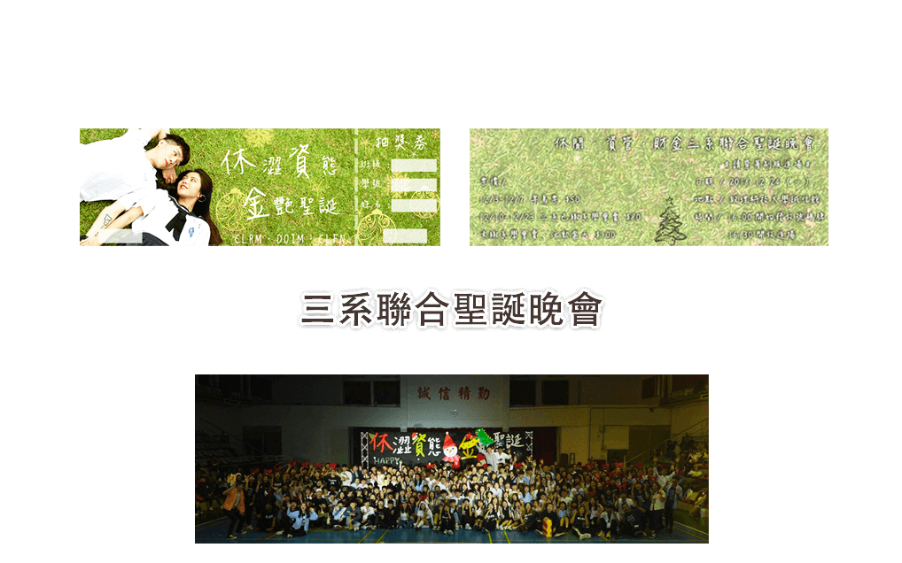
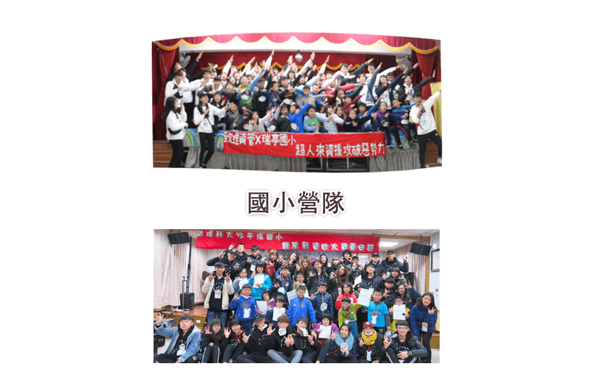
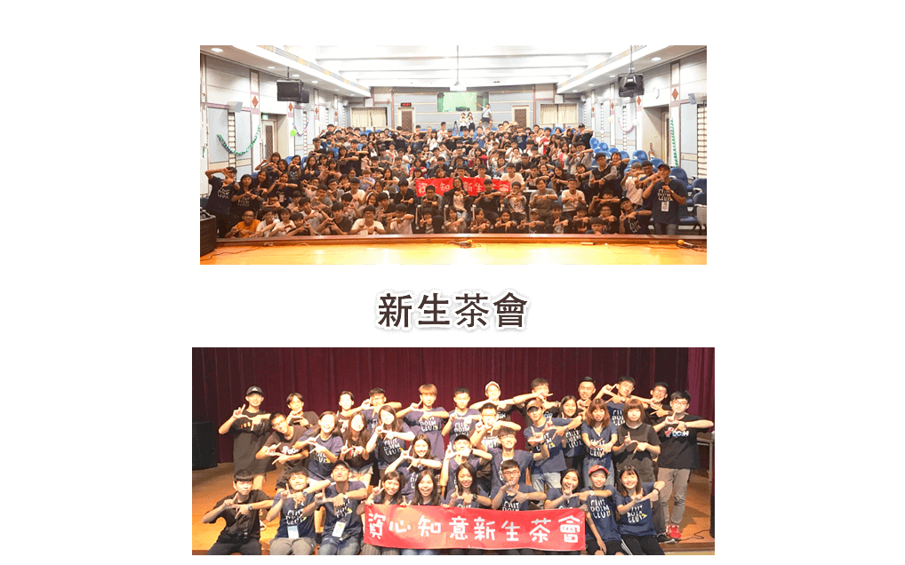

Q. 周家卉基本資料
A.
姓名：周家卉
英文：CHIA-HUI CHOU
電話：0920-065-503
信箱：wis19990711@gmail.com
生日：1999/07/11
學校：致理科技大學
系所：資訊管理系
Q. 簡短自我介紹
A. 您好，我是周家卉，是一位對學習新知充滿熱情的人，畢業於資訊管理專業，在大學期間專注於資安及網路架構的學習，實習過程中逐漸發現自己對前端開發的熱愛，有了前端工程師、MIS背景不同領域的相關經驗，這讓我在進入職場後，具備了良好的技術基礎和實務經驗。 我擁有扎實的前端開發技能，熟悉HTML5、CSS、JavaScript及jQuery、Bootstrap，及進行響應式設計。此外，我具備PHP程式開發能力，使用Git進行版本控制。 在設計方面，我熟悉Illustrator和Photoshop，能有效地創造吸引人的視覺效果。 我的網路架構知識包括TCP/IP、區域網路及機房管理，具備Windows Server、Hyper-V設備的管理經驗，並熟悉主流路由器、交換機及防火牆等設備。 在數據分析方面，我曾接觸Google Tag Manager和Google Analytics，這讓我在數據分析上有一定敏銳度，並理解行銷數據在網站優化中的價值。 我期待在前端開發和網路管理領域持續成長，為團隊貢獻更多價值。
Q. 在前端開發領域，有哪些相關的技術與實務經驗？
A. 我在前端開發領域有豐富的實務經驗，曾參與單頁應用（SPA）、公司官網改版及活動特輯網站等多樣專案。 我熟悉HTML5、CSS、JavaScript、jQuery，並具備PHP框架的應用能力，尤其擅長RWD（響應式網頁設計），能確保網站在不同設備上都有良好呈現。 我不僅注重網站的功能性，也在設計上兼顧美感，提升整體互動體驗。另外，我曾協助管理Google Tag Manager和Google Analytics，這讓我在數據分析上有一定敏銳度，並理解行銷數據在網站優化中的價值。
Q. 在MIS領域，有哪些相關的技術與實務經驗？
A. 我的MIS背景讓我在系統運作和網路架構方面有深厚基礎，尤其在資安和TCP/IP網路架構方面。 我曾在第三方支付行業的資安部門工作，負責系統安全性維護和監控，這段經驗讓我學會了在壓力下解決問題並迅速應對突發狀況。此外，我有SQL資料庫管理經驗，能協助企業進行資料備援與安全管理。我在這方面的經驗讓我能理解系統在企業運作中的重要性，也幫助我在工作中更有效地支持不同部門需求。
Q. 在前端開發與MIS領域的雙重背景如何幫助我在職場的發展？
A. 擁有前端工程師與MIS的背景讓我具備多面向的技術基礎。 在前端開發中，我能從MIS的角度考量系統架構和安全性需求；而在MIS的工作中，我則能利用前端知識，幫助公司開發或優化內部系統的介面，使使用者操作更加順暢。 我認為這種跨領域的背景讓我在與不同部門溝通時更有效率，能更快速理解並協調各部門需求，從而確保專案順利進行並提升整體工作效率。
Q. 面對工作中的挑戰，並持續提升自己的專業技能？